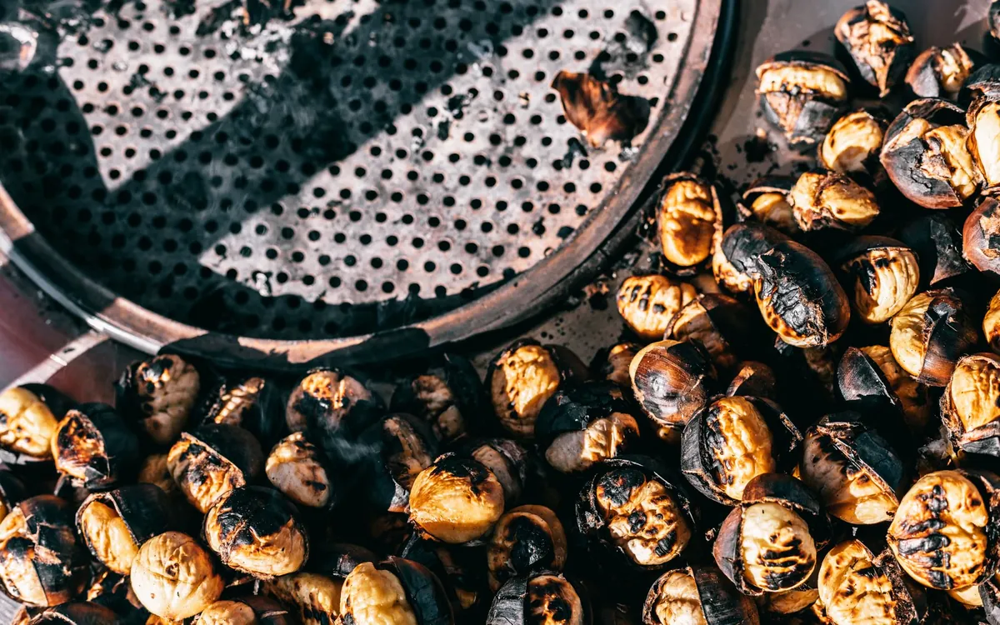

Mutfak
Fırından köze: kestane pişirmenin yolları
Közde pişen kestane, kış aylarının en sevilen tatlarından biridir. Kestaneyi evde pişirmek de zor değildir: doğru bir hazırlıkla fırında, tavada, kaynar suda, buharda ya da közde pişirilebilir ve her yöntem ayrı bir lezzet verir. Bu yazıda yöntemleri ve kestaneyi sofraya taşımanın yollarını derledik.
Hazırlık: yıkama ve çentik
Kestaneleri önce bol suyla yıkayıp süzün. Ardından keskin bir bıçakla her birinin kabuğunun şişkin yüzüne bir çizik ya da artı biçiminde bir çentik atın; bıçağın yalnızca kabuğu kesmesi yeterlidir.
Çentik, pişirmenin en önemli adımıdır. Kestane ısındıkça içindeki nem buhara dönüşür; çentik bu buhara bir çıkış yolu açar ve kabuğun patlamasını önler. Pişerken aralanan çentik, soymayı da kolaylaştırır.
İsteğe bağlı bir adım daha var: çentikli kestaneleri pişirmeden önce yarım saat kadar suda bekletmek. Bu, özellikle fırında ve közde, kestanenin içinin yumuşak kalmasına ve kabuğun kolay ayrılmasına yardımcı olabilir. Aynı boydaki kestaneleri bir arada pişirmek ise hepsinin aynı sürede hazır olmasını sağlar; boylar için kalibre rehberimize göz atabilirsiniz.

Fırında
Çentikli kestaneleri bir fırın tepsisine, çentikleri yukarı bakacak şekilde tek sıra dizin. Önceden ısıtılmış, 200 °C civarındaki fırında, boyuna göre genellikle 20–30 dakika pişirin. Kabuklar açılıp içi yumuşadığında kestane hazırdır.
Tavada: kestane kebap usulü
Sokaklarda satılan kestane kebabını evde hatırlatan yöntem tavadır. Delikli bir kestane tavası ya da kalın tabanlı bir tava kullanın. Kestaneleri tek sıra yayın, kapağı kapalı tutun ve orta ateşte ara sıra sallayarak, kabuklar yer yer kararıp açılana dek pişirin.
Haşlama ve buhar
Haşlamak için çentikli kestaneleri kaynar suya atın ve boyuna göre yaklaşık 20–30 dakika pişirin. Haşlanan kestane yumuşak olur; püre, pilav ve tatlılar için çoğunlukla bu yöntem tercih edilir.
Buharda pişirmek de benzer bir sonuç verir: çentikli kestaneleri bir buhar sepetine yerleştirin ve kapağı kapalı tencerede, kaynayan suyun buharında yaklaşık 20–30 dakika tutun.
Közde
Mangalda ya da sobada kestane pişirmenin sırrı, alevi değil korları kullanmaktır. Kestaneleri delikli bir tavaya ya da tel ızgaraya koyup korların üstünde tutun ve sık sık çevirin. Kabuklar kararıp açıldığında ve içi yumuşadığında kestane hazırdır.
Sıcakken soyun
Kestaneyi pişer pişmez, sıcakken soyun: kabuk çentikten itibaren kolayca açılır, ince iç zar da onunla birlikte ayrılır. Kestane soğudukça zarı yapışmaya başlar. Fırından ya da tavadan çıkan kestaneleri birkaç dakika temiz bir bezle örtmek bu işi daha da kolaylaştırır.
Sofrada kestane
Közlenmiş kestane sıcak sıcak, olduğu gibi yenir. Haşlanıp soyulmuş kestane ise birçok tarifin parçası olur: tereyağı ve sütle ezilerek hazırlanan kestane püresi, et ve kümes hayvanlarının yanında sevilen bir garnitürdür; kestaneli pilav da kış sofralarında sık rastlanan bir lezzettir.
Tatlılarda da kestanenin yeri büyüktür: kestane kreması ve kestane unuyla yapılan pastalar bunlardan yalnızca ikisidir. Kestane şekeri ise bütün tanelerin şeker şurubunda uzun ve sabırlı bir pişirmeyle hazırlandığı geleneksel bir tatlıdır; bu yüzden en iri boylar tercih edilir.
Kestaneyi pişireceğiniz güne kadar nasıl saklayacağınızı saklama rehberimizde, kestanelerimizi ise Ürünlerimiz bölümünde bulabilirsiniz.